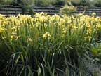

Iris
Iris species
Other names
flag
Description
A shade loving perennial herb with thickened red brown rhizomes or bulb like rootstocks. Flowers various colours, usually yellow or blue, up to 10 cm in diameter, in 2 to 4 flowered, unbranched scapes. They have a perianth and are divided into 6 segments, the outer 3 are reflexed and the inner 3 usually small erect and narrowed to a distinct claw. Flowers from Nov Dec. Leaves dark green, pointed, sword shaped, leathery, up to 25 mm wide. Fruit green, 3 sided capsules about 6 cm long, which split to reveal 3 rows of rounded bright red seeds each 5 mm in diameter. The capsules persist for several weeks.
Similar plants
The various irises found in New Zealand include stinking iris (I. foetidissima), bearded iris (I. germanica), and the aquatic yellow flag iris (I. pseudacorus). Other species are grown in gardens. The shape of the flowers is distinctive.
Distribution
Grown mainly as garden ornamentals, however I. foetidissima is frequently found around old homestead sites and in farm paddocks. Except in Westland, Fiordland and Southland it is both common and widespread thoughout the North and South Islands. I. germanica and I. pseudacorus are rarer. They all prefer damp spots and will actually grow in waterways.
Toxin
The toxin is possibly a phenol glycoside iridin, however the mechanism of action is not known. Some cytotoxic activity has been shown to occur. All parts of the plant (particularly the rhizome) are poisonous, even when dry. The sap of the plant is thought to be irritating to the skin and may occasionally cause blistering.
Species affected
Pigs, cattle, sheep
Clinical signs acute
Mouth irritation severe haemorrhagic gastroenteritis. Cattle: severe purging and high temperatures. Humans: nausea, violent diarrhoea, and abdominal burning. Pigs: bloody diarrhoea, abortion and possible death.
Clinical signs chronic
Post mortem signs
Inflammation of the stomach and intestines
Diagnosis
History of observed eating of the plant or identifiable plant remains in the gastrointestinal tract post mortem.
Differential diagnosis
Homeria, Moraea, Diplarrhena moraea (Australian native lily) Sisyrinchium micranthum (yellow rush lily)
Treatment
Prevent further ingestion of the plant and treat symptomatically.
Prognosis
Depends on the quantity ingested and the time prior to treatment. Not usually fatal.
Prevention
References
Conner H.E. The Poisonous Plants In New Zealand. 1992. GP Publications Ltd, Wellington
Cooper M R, Johnson A W. Poisonous Plants and Fungi in Britan: Animals and Human Poisoning. Her Majesty’s Stationary Office. London. 1998
Parton K, Bruere A.N. and Chambers J.P. Veterinary Clinical Toxicology, 2nd ed. 2001. Veterinary Continuing Education Publication No. 208
|  plant |
||
|
|
||